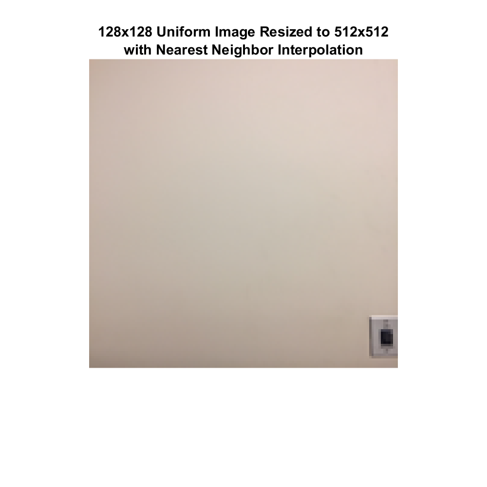

EE 152 Lab2: Fun with Sampling, Registration, and Quantization - Victoria Hall, 861154075
Contents
L2.1 Sampling and Resizing
Capture two color images # with sharp edges and frequences (e.g., a fence or some other repeating pattern) # with uniform regions and low frequencies (e.g., a cloudy sky or a portrait image with a soft background)
You may use standard images Barbara and Lena for refernce and initial testing, but the report must include results on original images captured by you.
a) Resize your images to 128x128 resolution using imresize() with and without anti-aliasing filter. Explain which sampling approach is better and why.
b) Resize your 128x128 images to 512x512 resolution using imresize() with different interpolation schemes: # nearest neighbor # bilinear # bicubic
I_sharp = imread('sharp.jpg'); I_uni = imread('uniform.jpg'); figure; imshow(I_sharp) title('Original Sharp Edge Image'); figure; imshow(I_uni) title('Original Uniform Regions Image');
Warning: Image is too big to fit on screen; displaying at 50% Warning: Image is too big to fit on screen; displaying at 33%
Part A. Images resized to 128x128 with anti-aliasing
I_sharp128_anti_on = imresize(I_sharp, [128 128], 'Antialiasing', true); I_uni128_anti_on = imresize(I_uni, [128 128], 'Antialiasing', true); figure; imshow(I_sharp128_anti_on); title({'Resized Sharp Image 128x128', 'with Anti-Aliasing'}); set(gcf, 'Position', [500, 500, 300, 250]) figure; imshow(I_uni128_anti_on); title({'Resized Uniform Image 128x128', 'with Anti-Aliasing'}); set(gcf, 'Position', [500, 500, 300, 250])
Part A. Images resized to 128x128 without anti-aliasing
I_sharp128_anti_off = imresize(I_sharp, [128 128], 'Antialiasing', false); I_uni128_anti_off = imresize(I_uni, [128 128], 'Antialiasing', false); figure; imshow(I_sharp128_anti_off); title({'Resized Sharp Image 128x128', 'without Anti-Aliasing'}); set(gcf, 'Position', [500, 500, 300, 250]) figure; imshow(I_uni128_anti_off); title({'Resized Uniform Image 128x128', 'without Anti-Aliasing'}); set(gcf, 'Position', [500, 500, 300, 250])
The image resizing with anti-aliasing is better because the repeating black lines of the sharp edges image retain more of their black-then-tan pattern, while the image without anti-aliasing shows more tan where some of the black should be. The image without anti-aliasing looks more different from the original image than the image with anti-aliasing.
Part B. 128x128 images resized to 512x512 with nearest neighbor interpolation.
I_sharp512_near = imresize(I_sharp128_anti_on, [512 512], 'nearest'); I_uni512_near = imresize(I_uni128_anti_on, [512 512], 'nearest'); figure; imshow(I_sharp512_near); title({'128x128 Sharp Image Resized to 512x512', 'with Nearest Neighbor Interpolation'}); set(gcf, 'Position', [500, 100, 500, 500]) figure; imshow(I_uni512_near); title({'128x128 Uniform Image Resized to 512x512', 'with Nearest Neighbor Interpolation'}); set(gcf, 'Position', [500, 100, 500, 500])
Part B. 128x128 images resized to 512x512 with bilinear interpolation.
I_sharp512_bil = imresize(I_sharp128_anti_on, [512 512], 'bilinear'); I_uni512_bil = imresize(I_uni128_anti_on, [512 512], 'bilinear'); figure; imshow(I_sharp512_bil); title({'128x128 Sharp Image Resized to 512x512', 'with Bilinear Interpolation'}); set(gcf, 'Position', [500, 100, 500, 500]) figure; imshow(I_uni512_bil); title({'128x128 Uniform Image Resized to 512x512', 'with Bilinear Interpolation'}); set(gcf, 'Position', [500, 100, 500, 500])
Part B. 128x128 images resized to 512x512 with bicubic interpolation.
I_sharp512_bic = imresize(I_sharp128_anti_on, [512 512], 'bicubic'); I_uni512_bic = imresize(I_uni128_anti_on, [512 512], 'bicubic'); figure; imshow(I_sharp512_bic); title({'128x128 Sharp Image Resized to 512x512', 'with Bicubic Interpolation'}); set(gcf, 'Position', [500, 100, 500, 500]) figure; imshow(I_uni512_bic); title({'128x128 Uniform Image Resized to 512x512', 'with Bicubic Interpolation'}); set(gcf, 'Position', [500, 100, 500, 500])
L2.2 Quantization
Use 128x128 images from the previous step. Start with 8-bit representation (256-level quantization) of each color channel and reduce the number of quantization levels by removing the least significant bit one by one.
a) Display your results for all quantization levels
b) Explain at what levels do you see false contouring (the effect where instead of noticing a gradual change of intensity, we notice connected regions/contours with same intensities)
c) To avoid false contouring, try adding a small amount of random noise in the image before quantization
I_sharp_quant = I_sharp128_anti_on;
figure;
imshow(I_sharp_quant)
title({'Sharp Image Quantization', strcat('with ', num2str(8), '-bit Representation')});
set(gcf, 'Position', [500, 500, 300, 250])
for i = 1:8
I_sharp_quant = bitset(I_sharp_quant, i, 0);
figure;
imshow(I_sharp_quant)
title({'Sharp Image Quantization', strcat('with ', num2str(8-i), '-bit Representation')});
set(gcf, 'Position', [500, 500, 300, 250])
end
I_uni_quant = I_uni128_anti_on;
figure;
imshow(I_uni_quant)
title({'Sharp Image Quantization', strcat('with ', num2str(8), '-bit Representation')});
set(gcf, 'Position', [500, 500, 300, 250])
for i = 1:8
I_uni_quant = bitset(I_uni_quant, i, 0);
figure;
imshow(I_uni_quant)
title({'Sharp Image Quantization', strcat('with ', num2str(8-i), '-bit Representation')});
set(gcf, 'Position', [500, 500, 300, 250])
end
You start to see false contouring at the 5-bit representation level.
I_sharp_noise = imnoise(I_sharp128_anti_on, 'gaussian', 0, 0.0001); figure; imshow(I_sharp_noise) title({'Sharp Image Quantization', strcat('with ', num2str(8), '-bit Representation')}); set(gcf, 'Position', [500, 500, 300, 250]) for i = 1:8 I_sharp_noise = bitset(I_sharp_noise, i, 0); figure; imshow(I_sharp_noise) title({'Sharp Image Quantization', strcat('with ', num2str(8-i), '-bit Representation')}); set(gcf, 'Position', [500, 500, 300, 250]) end I_uni_noise = imnoise(I_uni128_anti_on, 'gaussian', 0, 0.0001); figure; imshow(I_uni_noise) title({'Sharp Image Quantization', strcat('with ', num2str(8), '-bit Representation')}); set(gcf, 'Position', [500, 500, 300, 250]) for i = 1:8 I_uni_noise = bitset(I_uni_noise, i, 0); figure; imshow(I_uni_noise) title({'Sharp Image Quantization', strcat('with ', num2str(8-i), '-bit Representation')}); set(gcf, 'Position', [500, 500, 300, 250]) end
By adding a little bit of noise to the original image before quantizing it at different levels, the false contouring doesn't happen until a later quantization level.
L2.3 Registration and Detection
Ask one of your frieds to capture two pictures for you in front of a static background with a hand-held camera: one with you in the frame and the other with the background only.
a) Register the two images if needed
b) Compute a difference image between the registered copies of the two images
c) Design a thresholding scheme that converts the difference image into a binary image with all the background pixels assigned 0 value and all the pixels where you are present assigned 1.
fixed = rgb2gray(imread('wall.jpg')); moving = rgb2gray(imread('me.jpg')); figure; imshow(fixed); title('Background Only'); figure; imshow(moving); title('Backgound With Me'); [optimizer, metric] = imregconfig('multimodal'); register = imregister(moving, fixed, 'affine', optimizer, metric); figure; imshowpair(register, fixed) title('Registed Image') diff = imabsdiff(register, fixed); figure; imshow(diff); title('Difference Image'); thresh = graythresh(diff); % Otsu threshold algorithm imthresh = imbinarize(diff, thresh); figure; imshow(imthresh) title('Binary Image');
Warning: Image is too big to fit on screen; displaying at 33% Warning: Image is too big to fit on screen; displaying at 33% Warning: Image is too big to fit on screen; displaying at 33% Warning: Image is too big to fit on screen; displaying at 33% Warning: Image is too big to fit on screen; displaying at 33%